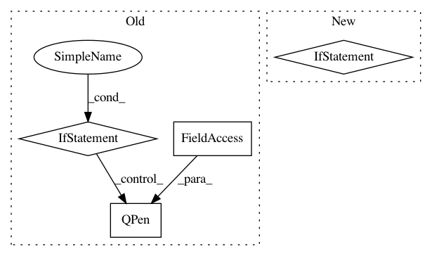

dbd113a4c1f3e01b5261169a7533a00c315df7f8,ilastik/applets/multicut/multicutGui.py,MulticutGuiMixin,setupLayers,#MulticutGuiMixin#,192
Before Change
op = self.__topLevelOperatorView
// Final segmentation -- Edges
if op.Output.ready():
default_pen = QPen(SegmentationEdgesLayer.DEFAULT_PEN)
default_pen.setColor(Qt.blue)
layer = SegmentationEdgesLayer( LazyflowSource(op.Output), default_pen )
layer.name = "Multicut Edges"
layer.visible = False // Off by default...
layer.opacity = 1.0
layers.append(layer)
del layer
// Superpixels -- Edge Probabilities
// We use the RAG"s superpixels, which may have different IDs
self.superpixel_edge_layer = None
if op.Superpixels.ready() and op.EdgeProbabilitiesDict.ready():
layer = SegmentationEdgesLayer( LazyflowSource(op.Superpixels) )
layer.name = "Superpixel Edge Probabilities"
After Change
del layer
mc_seg_layer = self.create_multicut_segmentation_layer()
if mc_seg_layer:
layers.append(mc_seg_layer)
// Superpixels
if op.Superpixels.ready():
layer = self.createStandardLayerFromSlot( op.Superpixels )
layer.name = "Superpixels"
layer.visible = False
In pattern: SUPERPATTERN
Frequency: 3
Non-data size: 4
Instances
Project Name: ilastik/ilastik
Commit Name: dbd113a4c1f3e01b5261169a7533a00c315df7f8
Time: 2016-08-01
Author: bergs@janelia.hhmi.org
File Name: ilastik/applets/multicut/multicutGui.py
Class Name: MulticutGuiMixin
Method Name: setupLayers
Project Name: matplotlib/matplotlib
Commit Name: 984fba18bcce543f3dd65c5fe5cadfc40e80e690
Time: 2018-01-29
Author: anntzer.lee@gmail.com
File Name: lib/matplotlib/backends/backend_qt5agg.py
Class Name: FigureCanvasQTAggBase
Method Name: paintEvent
Project Name: biolab/orange3
Commit Name: 450e8c7a942288acd301a9b7059e977b1019cfa3
Time: 2016-10-14
Author: janez.demsar@fri.uni-lj.si
File Name: Orange/widgets/classify/owclassificationtreegraph.py
Class Name: TreeNode
Method Name: paint